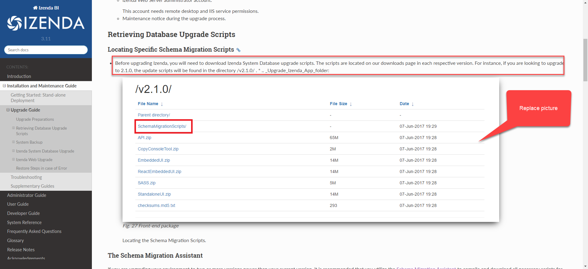

Upgrade Guide¶
Izenda provides monthly maintenance releases with bug fixes and performance increases. At least 2 point releases should be expected each year but our goal is to release quarterly (4) point releases annually.
Upgrade Preparations¶
- Determine Your Current Version: There are several ways to check your Izenda version. After the upgrade process is complete, be sure that each of your Izenda components are the same version.
- In the Izenda platform, navigate to the “Settings” panel. The “License Information” section will contain the current Izenda version.
- In your Izenda Configuration Database, query for the ‘Version’ field in the IzendaDBVersion Table. This will let you identify your database version.
- In Windows Explorer, navigate to your API’s bin directory (in stand alone versions of the API, this will be located at /API/bin/). Locate a dll prefixed with “Izenda.” Right click > properties > details. This will provide you with the current API version of Izenda.
Permissions and Tools
Database client GUI to connect to Izenda System Database.
e.g. Management Studio for MS SQL Server.
Izenda System Database administrator account.
e.g. a user with db_owner and db_backupoperator roles in SQL Server.
Izenda Web Server administrator account.
This account needs remote desktop and IIS service permissions.
Maintenance notice during the upgrade process.
Retrieving Database Upgrade Scripts¶
Locating Specific Schema Migration Scripts¶
Before upgrading Izenda, you will need to download Izenda System Database upgrade scripts. The scripts are located on our downloads page in each respective version. For instance, if you are looking to upgrade to 2.1.0, the update scripts will be found in the directory /v2.1.0/ . * .. _Upgrade_Izenda_App_folder:
Fig. 27 Front-end package
Locating the Schema Migration Scripts.
The Schema Migration Assistant¶
If you are upgrading your environment to two or more versions newer than your current version, it is recommended that you utilize the Schema Migration Assistant to compile and download all necessary scripts for your upgrade. This tool allows you to specify your Current Version, Target Version, and Database Type. If the “Download as sql script” is checked, your compiled script will automatically be downloaded. If this option is unchecked, your compiled script will be displayed in your browser.

System Backup¶
Izenda System Database Backup¶
Note
Izenda recommends that you back up your data before upgrading to a newer version.
This is a step-by-step guide for SQL Server using Management Studio GUI.
-
Log in to the server with Izenda System Database using an administrator account.
Right-click the Izenda database then Tasks > Back Up...
-
In the pop-up, choose Backup type Full and Backup component Database.
(Full backup option since Izenda System Database stays at a relatively small size)
Give any name for the backup set.
Choose to back up to Disk and click Add.
-
Select File name and click ... button to select a path and file name.
-
Click OK 3 times to run the backup.
{kind=link}
{kind=link}
{kind=link}
{kind=link}
Izenda Web Backup¶
Remote desktop to the Web Server to perform this step.
Open the Izenda deployment folder in IIS.
A typical location is at C:\inetpub\wwwroot\Izenda...
Back up Izenda Front-end and Back-end files.
Copy the current API and App folders to a safe location.
Back up configuration files to avoid being overwritten.
Copy the following configuration files to a temporary location.
API\izendadb.configAPI\Web.configif there are custom configurations
Izenda System Database Upgrade¶
This is a step-by-step guide for SQL Server using Management Studio GUI.
Identify the Current Izenda System Database Version¶
- Right-click the Izenda database then New Query.
- Run the query
select Version from IzendaDBVersion. - The result is the current database version.
Upgrade Izenda System Database Gradually to Latest Version¶
Open the Izenda System Database upgrade script folder.
In SQL Server Management Studio, open the script in the folder that upgrades the current version to the next.
e.g. if current version is 0.22.4, then open the script “IzendaDBSchema.sql” in “0.22.4-0.22.5” folder.
Check that the target database is correct.
Run the script to upgrade database to next version.
Continue to run the scripts for each next version.
e.g. if current version is “0.22.5” and latest version is “0.22.8”, then run the scripts in folders “0.22.5-0.22.6”, “0.22.6-0.22.7” and “0.22.7-0.22.8” in that order.
After all the scripts, re-run the query
select Version from IzendaDBVersionto verify the version.
Izenda Web Upgrade¶
The following steps outline how to upgrade your front end and back end via a remote desktop connection to the Web Server.
Replace Current Front End and Back End Packages¶
Please note, the configuration files should be backed up using the Izenda Web Backup section since they will be overwritten in this step.
- Download the Izenda Front-end and Back-end Packages to Web Server. Ensure that the version you are downloading matches your updated database version set in the section above.
- For a Stand Alone version of Izenda, you will need to download the API and the StandaloneUI packages from our downloads page.
- For Integrated versions of Izenda, you will need to download the API and the EmbeddedUI packages from our downloads page.
- Stop the web site process to avoid Izenda DLL files being used.
- Remove all files in your current API and App directories.
- Copy the files from the downloaded API and App folders to the current API and App directories, respectively.
- For Integrated versions of Izenda, you will need to update your web application with these resources and publish it according to your company standards.
Restore the Current Configuration¶
- Back-end: copy the configuration files from temporary location in
Izenda Web Backup step to overwrite default
ones in
APIfolder.izendadb.configWeb.configif it has been backed up.
- Front-end: in
App\izenda_config.js, update the value ofWebApiUrlto the current address of back-end APIs (e.g.http://localhost:8888/api/).
Restart the Web Server¶
Restore Steps in case of Error¶
- Restore the database using the back up file in Izenda System Database Backup step.
- Empty the API and App folders then copy back the contents from the location in Izenda Web Backup step.